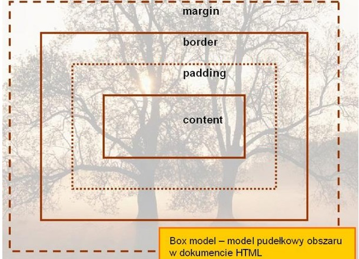
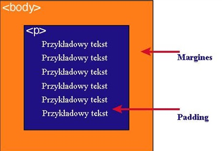

| Zawartość | Opis | ||||||
| content | zawartość elementu (np.: tekst, obrazek) | ||||||
| padding | otaczające marginesy wewnętrzne, odstęp między obramowaniem i zawartością elementu | ||||||
| border | obramowania wokół zawartości elementu, ma styl i kolor. | ||||||
| margin | marginesy wokół ramki (margines zewnętrzny). Jest to pusty obszar wokół ramki, który nie ma koloru tła i jest przeźroczysty. | ||||||

